23.1.1.5 安全校核环节
安全校核环节为市场出清计算提供灵敏度、断面初始潮流等信息，并对市场出清结果进行安全分析，新增越限设备和断面信息提供给市场出清重新计算，形成闭环迭代。
23.1.1.6 结果分析环节
结果分析环节主要包括市场价格、出力安排、电网安全三个方面的出清结果分析，如图23-3～图23-5所示。能够自动分析机组价格越限、机组出力越限、备用不足、系统不平衡量、断面重载或越限等异常出清信息，并进行告警。
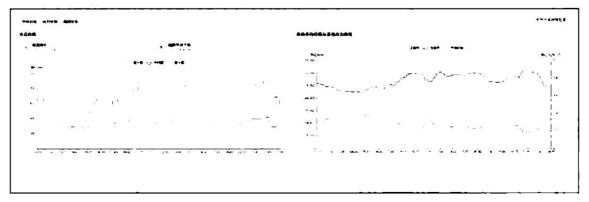
图23-3 出清结果分析-价格分析
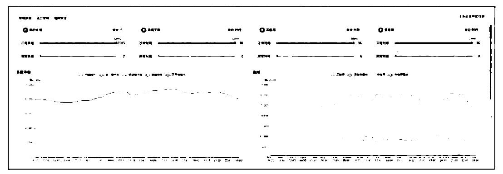
图 23-4 出清结果分析 - 出力分析
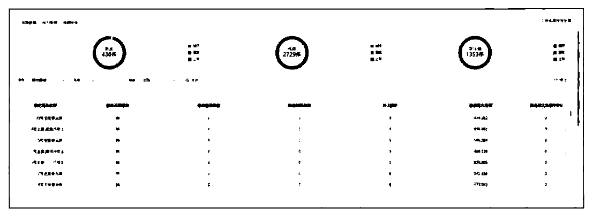
图23-5 出清结果分析-安全分析
23.1.1.7 结果发布环节
结果发布环节负责最终结果的批准和发布，将结果数据发布给其他应用和其他调度系统，实现不同应用和不同调度系统间的数据共享，结果发布界面如图23-6所示。
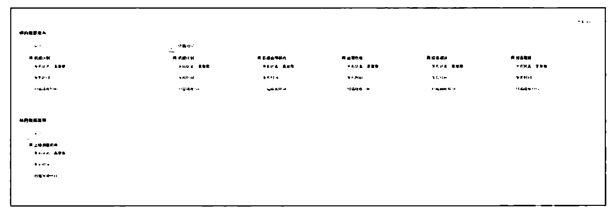
图23-6 结果发布
23.1.2 核心功能
日前市场出清业务流程的实现基于以下主要功能。
23.1.2.1 约束条件管理
约束条件管理包括对机组约束、系统平衡约束、网络约束进行参数配置和生效设置。
机组约束包括但不限于：
（1）机组（机组群）可调出力约束，包括机组（机组群）出力上限约束、出力下限约束，支持每个时段设定不同的上下限值。
（2）机组爬坡速率约束，包括机组升出力速率约束和降出力速率约束。
（3）机组最小启停时间约束，包括机组最小停机时间和机组最小连续运行时间。
（4）固定计划约束，支持机组和电厂（机组群）固定计划设置。
（5）电量约束，支持机组和电厂（机组群）日发电量约束的设置。
（6）燃料约束，包括系统燃料约束。
系统平衡约束包括但不限于：
（1）功率平衡约束，要求满足系统各个时段用电需求、交换计划和发电计划保持功率平衡。
（2）系统备用约束，支持系统备用容量（比例）设定，要求机组组合计划和出力计划满足系统备用要求。
网络约束包括但不限于：
（1）断面限额约束，包括线路断面、主变压器断面的有功限额。
（2）单元件热稳极限约束，包括线路、主变压器热稳限额。
23.1.2.2 数据处理与校验
数据处理与校验对日前市场所需数据进行数据校验和处理，确保数据满足计算要求。数据校验具备校验规则的配置和生效设置，包括对各类分项数据的单一合理性验证，以及对各种相互关联数据的相关性验证。数据处理具备对日前市场所使用的系统负荷预测、母线负荷预测、联络线计划、检修计划等数据进行修改维护。
23.1.2.3 日前市场出清
日前市场出清基于安全约束机组组合（SCUC）和安全约束经济调度（SCED）技术进行优化出清，能够考虑约束条件管理设置的各类约束，以社会福利最大化（或购电费用最小、发电成本最小）等为目标函数，针对设定的交易时段范围进行集中优化出清，计算结果包括机组开停机组合、出力、负荷、价格、优化成本、约束是否松弛、计算时间、计算过程日志、潮流分析结果等信息。能够与安全校核进行迭代计算，安全校核对市场出清结果进行校核计算，如果发现设备或断面越限，则反馈越限信息至市场出清重新进行优化出清，直至生成满足安全约束的市场出清结果。在具体实现上支持多算例的并行计算及对比分析。
1. 优化目标
日前出清 SCUC 模型的目标是社会福利最大化，目标函数表示为
$$ \max F=\sum_{d=1}^{D}\sum_{t=1}^{T}[B_{d,t}(P_{d,t})]-\sum_{i=1}^{N}\sum_{t=1}^{T}[C_{i,t}(P_{i,t})+C_{i,t}^{U}] $$
（23-1）
式中：T为系统调度期间的时段数，日前出清考虑96时段，则T为96；N表示机组台数；D表示负荷个数； $ P_{i,t} $表示机组i在时段t的出力； $ P_{d,t} $表示市场负荷d在时段t的用电计划； $ C_{i,t}(P_{i,t}) $、 $ C_{i,t}^{U} $分别为机组i在时段t的发电成本和启动成本； $ B_{d,t}(P_{d,t}) $为负荷d在时段t的售电收益。
机组发电成本可表示为
$$ C_{i,t}(P_{i,t}){=}\sum_{m=1}^{N M}C_{i,m}P_{i,t,m} $$
（23-2）
式中：NM 为机组报价总段数； $ P_{i,t,m} $ 为机组 i 在 t 时刻第 m 个出力区间中的中标电力； $ C_{i,m} $ 为机组申报的第 m 个出力区间对应的能量价格。
$ P_{i,t} $ 可进一步表示为
$$ P_{i,t}=\sum_{m=1}^{NM}P_{i,t,m} $$
(23-3)
负荷侧售电收益可表示为
$$ B_{d,t}(P_{d,t})=\sum_{m=1}^{N D}C_{d,m}P_{d,t,m} $$
(23-4)
式中：ND 为负荷侧报价总段数； $ P_{d,t,m} $ 为负荷 d 在 t 时刻第 m 个出力区间中的中标电力； $ C_{d,m} $ 为负荷申报的第 m 个出力区间对应的购电价格。
$ P_{d,t} $ 可进一步表示为
$$ P_{d,t}=\sum_{m=1}^{N D}P_{d,t,m} $$
（23-5）
国内电力现货市场建设初期，负荷侧一般不参与市场竞价出清，故用户侧售电收益 $ B_{d,t}(P_{d,t}) $为常数，社会福利最大化的优化目标可以转化为发电成本最小，即
$$ \min F=\sum_{i=1}^{N}\sum_{t=1}^{T}[C_{i,t}(P_{i,t})+C_{i,t}^{U}] $$
(23-6)
2. 约束条件
约束条件决定日前市场出清的可行域范围，由于各地区电力现货市场规则不同导致约束条件存在差异，故可对机组约束、系统平衡约束、网络约束进行参数配置和生效设置。具体约束条件参见约束条件管理。
3. 模型求解
SCUC 模型求解算法一直是电力系统研究的热点领域，大致经历了三个发展阶段。
早期，机组开停与出力分配分别优化，前者采用优先顺序法或动态规划法优化机组开停，后者在确定的开停计划基础上，采用基于等微增原理的 $ \lambda $迭代法分配机组出力。
第二阶段，出现了机组启停和出力分配的联合优化方法，如拉格朗日（Lagrange）松弛算法和人工智能方法（如遗传算法、模拟退火算法等），Lagrange松弛算法在实际电力工业中得到广泛应用，但不能考虑电网安全问题，通常再需要辅助最优潮流（OPF）程序对各个时段的发电计划进行安全校正，由于OPF分别孤立地对每一个时段进行校正，因此容易引起机组出力在不同时段的反复调节，甚至违反机组爬坡速度和持续开停机的约束。
第三阶段，即当前考虑电网安全的安全约束机组组合（SCUC）优化算法，SCUC提出了多时段上的机组开停、出力分配、电网安全的联合优化，目前主要有Lagrane松弛算法和混合整数规划（MIP）算法，由于Lagrane松弛算法在组合建模（如联合循环机组）和Lagrane乘子迭代方面存在一些困难，当前SCUC研究和应用较广的是MIP算法。
传统的 MIP 算法采用分支定界原理进行离散变量组合优化，由于存在“组合爆炸”问题，难以满足电力系统大规模优化的要求。但近几年，随着 MIP 算法的发展，特别是割平面算法、分支割平面算法的引入，MIP 算法在求解大规模问题方面得到长足进步，并成功应用于电力系统中。MIP 算法求解 SCUC 的算法原理和过程如下：
（1）线性化。MIP算法基于线性优化方法，在求解SCUC问题时，首先需要将非线性因素作线性化逼近，包括发电成本曲线的线性逼近、潮流约束的灵敏度线性化。
（2）松弛离散变量，求解松弛问题最优解。将 SCUC 问题中的离散变量松弛，形成不考虑整数约束的松弛问题，采用线性规划法求解松弛问题，该问题的最优解即为 SCUC 问题的理论下界值。
（3）以松弛问题的最优解为初始点，进行整数分割寻优，求解整数变量可行解。
（4）判断整数可行解与第（2）步中的松弛最优解之间的间隙是否满足收敛精度。如果满足则结束，否则转入第（3）步，寻找其他分支，直到满足收敛条件。
MIP算法的核心在于组合分支的选择和寻优，这是决定MIP算法效率和实用性的关
键。当前的 MIP 算法在分支寻优过程中，广泛引入的割平面技术，包括背包覆盖（knapsack covers），广义上界覆盖（GUB covers），流覆盖（Flow Covers），最大团（割平面，Cliques），隐含边界（implied bounds），Gomory 混合整数割平面（Gomory Mixed-Interge Cuts）等，这些方法避免无效分支选择，加快组合空间的搜索。
4. 节点电价
节点电价直接反映了电能在时间、空间上的价值稀缺性，并考虑了网损的影响因素，是电力现货市场中重要的价格引导信号。节点电价由系统电能价格、电网阻塞价格和网损价格分量三部分构成。其中系统电能价格和电网阻塞价格可以通过SCED优化结果直接计算得到，本质反映了电力平衡约束和电网安全约束对目标函数购电费用或者社会福利的影响。
日前市场出清后，得到各时段系统负荷平衡约束、线路和断面潮流约束的拉格朗日乘子，则节点 k 在时段 t 的节点电价为
$$ \left|L M P_{k,t}=\lambda_{i}-\sum_{l=1}^{L}(\tau_{l,t}^{\mathrm{m a x}}-\tau_{l,t}^{\mathrm{m i n}})G_{l-k}-\sum_{s=1}^{S}(\tau_{s,t}^{\mathrm{m a x}}-\tau_{s,t}^{\mathrm{m i n}})G_{s-k}\right| $$
(23-7)
式中： $ \lambda_{i} $ 为时段 t 系统负荷平衡约束的拉格朗日乘子； $ \tau_{l,t}^{\max} $ 为线路 l 最大正向潮流约束的拉格朗日乘子，当线路潮流越限时，该拉格朗日乘子为网络潮流约束松弛罚因子； $ \tau_{l,t}^{\min} $ 为线路 l 最大反向潮流约束的拉格朗日乘子，当线路潮流越限时，该拉格朗日乘子为网络潮流约束松弛罚因子； $ \tau_{s,t}^{\max} $ 为断面 s 最大正向潮流约束的拉格朗日乘子，当断面潮流越限时，该拉格朗日乘子为网络潮流约束松弛罚因子； $ \tau_{s,t}^{\min} $ 为断面 s 最大反向潮流约束的拉格朗日乘子，当断面潮流越限时，该拉格朗日乘子为网络潮流约束松弛罚因子； $ G_{l-k} $ 为节点 k 对线路 l 的发电机输出功率转移分布因子； $ G_{s-k} $ 为节点 k 对断面 s 的发电机输出功率转移分布因子。
23.1.2.4 市场结果监测
通过市场出清价格、机组出力、常规断面三个方面对出清结果进行分析监测。能够根据设定的最高限价进行异常价格检测，如果超过门槛值则告警；在出力监测方面，分析是否存在机组出力不在参数限定范围内、系统平衡约束松弛量超过设定值、系统备用需求不满足等情况，如果存在则告警；断面监测方面，当出清结果在进行交流潮流时出现断面重载或越限情况时进行告警。
23.1.2.5 市场出清异常处置
在规定的时间内日前市场出清无满足约束条件的出清结果或者市场出清异常，无法满足电网稳定运行安全约束时，由市场运营机构进行异常处置，并发布处置后的日前市场交易结果，市场出清异常处置措施包括：
（1）修改不能满足的约束条件重新进行市场出清。
（2）根据市场规则以前一日或者历史相似日市场交易结果作为日前市场出清结果。
（3）其他符合市场规则的市场出清异常处置措施。
23.1.2.6 日前市场结果管理
日前市场结果管理支持对市场出清相关结果的查询统计，包括机组组合、机组出力、负荷中标量、出清价格、设备重载越限信息等，并能根据实际规则需求进行人工干预。为便于后续日前市场出清算例的反演分析，能够将当前计算场景全流程数据进行封存管理。对于市场出清结果无异议后，对机组出力及启停计划、节点电价等市场出清结果进行审批，审批通过后的结果可对外部横纵向系统进行发布。
23.2 可靠性机组合
在双边市场下，日前市场出清采用用户侧申报的负荷曲线进行市场出清，由于用户申报的负荷存在一定的不准确性及日前市场出清结果后电网运行状态可能发生较大变化，因此，需要采用市场运营机构或电网运营机构预测的系统负荷预测进行日前可靠性机组组合，形成满足电网可靠性运行要求的机组组合。日前可靠性机组组合根据发电侧市场主体的日前市场申报数据，采用系统负荷预测，考虑电网安全约束、机组运行约束、系统约束及其他可行性约束条件，每天分为若干个时段（如24或96个时段），以购电费用最低等为目标函数进行优化，集中优化计算考虑可靠性的次日机组组合计划和出力计划。
23.2.1 业务流程
可靠性机组组合的业务流程主要包括启动、数据处理、数据校验、优化计算、安全校核、市场异常监测、结果管理、市场发布等环节，可靠性机组组合操作页面如图23-7所示。
图23-7 可靠性机组组合操作页面
23.2.1.1 启动环节
可靠性机组组合仅支持人工启动计算方式。
23.2.1.2 数据处理环节
数据处理环节根据可靠性机组组合的计算范围获取几次数据，为可靠性机组组合提供计算场景。场景数据类型主要包括模型数据、方式数据、市场报价、短期系统负荷预测、短期母线负荷预测、短期新能源预测功率、机组发电能力、输变电设备检修、稳定断面限额、联络线计划、机组申报固定出力计划、系统备用需求等信息。
23.2.1.3 数据校验环节
数据校验环节对场景数据的完整性、合理性和关联性关系进行校验。数据完整性校验从时段和设备两个维度进行校验，保证数据的完备性；数据合理性校验通过与经验数据或相似日数据对比，过滤异常数据，保证数据的合理性；数据关联性校验是针对关联性约束进行校验，保证可行域的存在。
23.2.1.4 优化计算环节
优化计算环节考虑根据发电侧市场主体的日前市场申报数据，采用系统负荷预测，考虑电网安全约束、机组运行约束、系统约束及其他可行性约束条件，每天分为若干个时段（如24或96个时段），以购电费用最低等为目标函数进行优化，集中优化计算考虑可靠性的次日机组组合计划和出力计划。
23.2.1.5 安全校核环节
安全校核环节为市场出清计算提供灵敏度、断面初始潮流等信息，并对市场出清结果进行安全分析，新增越限设备和断面信息提供给市场出清重新计算，形成闭环迭代。
23.2.1.6 市场异常监测环节
市场异常监测环节主要从市场价格、出力安排、电网安全三个方面对出清结果进行分析，要求应包括但不限于：支持价格异常监测，设定最高限价，当价格超过门槛值时进行告警；支持机组计划异常监测，如果系统平衡约束松弛量超过设定值、系统备用需求不满足等情况进行告警；支持断面异常监测，当出清结果在进行潮流安全分析时出现断面重载或越限情况时进行告警。
23.2.1.7 结果管理环节
结果管理环节主要从机组开停、机组出力、常规断面等维度对优化结果进行分析管理。能够自动分析备用不足、系统不平衡量、断面重载或越限等异常出清信息，并进行告警。
23.2.1.8 市场发布环节
市场发布环节负责最终结果的批准和发布，发布对象是其他应用和其他调度系统，实现不同应用和不同调度系统间的数据共享。
23.2.2 核心功能
可靠性机组组合业务流程的实现基于以下主要功能。
23.2.2.1 机组组合优化约束条件管理
为可靠性机组组合提供机组约束、系统平衡约束、网络约束等约束条件的参数配置及生效设置功能。
机组约束包括但不限于：
（1）机组（机组群）可调出力约束，包括机组（机组群）出力上限约束、出力下限约束，支持每个时段设定不同的上下限值。
（2）机组爬坡速率约束，包括机组升出力速率约束和降出力速率约束。
（3）机组最小开停时间约束，包括机组最小停机时间和机组最小连续运行时间。
（4）机组最大启停次数约束。
（6）电量约束，支持机组和电厂（机组群）日发电量约束的设置。
（5）固定计划约束，支持机组和电厂（机组群）固定计划设置。
（7）水电机组振动区设置，支持设置水电机组振动区出力区间。
（8）燃料约束，包括系统燃料约束。
系统平衡约束包括但不限于：
（1）功率平衡约束，要求满足系统各个时段用电需求、交换计划和发电计划保持功率平衡。
（2）系统备用约束，支持系统备用容量（比例）设定，要求机组组合计划和出力计划满足系统旋转备用和调节备用要求。
网络约束包括但不限于：
（1）断面限额约束，包括线路断面、主变断面的有功限额。
（2）单元件热稳极限约束，包括线路、主变热稳限额。
23.2.2.2 数据校验与处理
对可靠性机组组合所需的各类基础数据进行完整性、准确性校验，同时支持数据处理功能，确保基础数据满足可靠性机组组合的计算要求。主要包括：
（1）对机组组合所需数据进行数据校验和处理，确保数据满足计算要求。
（2）具备数据校验功能，支持校验规则的配置和生效设置，包括对各类分项数据的单一合理性验证，以及对各种相互关联数据的相关性验证。
（3）具备数据处理功能，支持对机组组合计算所使用的系统负荷预测、母线负荷预测、联络线计划、检修计划等数据进行修改维护。
23.2.2.3 可靠性机组组合优化
可靠性机组组合与市场出清边界条件的唯一区别便是用电需求来源，为避免市场出清中用户侧申报负荷容量低于系统负荷预测有功功率导致市场出清发电容量不足，故构建
可靠性机组组合模型。该模型基于市场出清结果对在线发电容量做进一步调整，不改变市场出清结果的机组组合状态，在机组出力不低于市场出清结果的基础上，增加在线发电资源容量。由此可知，可靠性机组组合与日前市场出清模型大部分约束可复用，故本章节中仅对可靠性机组组合特有约束和改造约束做详细阐述，其他约束不再赘述。
1. 优化目标
可靠性机组组合以启机成本、空载成本和购电成本最小为优化目标，目标函数为
$$ \overline{\min F=\sum_{i=1}^{N}\sum_{t=1}^{T}[C_{i,\min}(U_{i,t})+C_{i,t}^{U}+C_{i,t}(P_{i,t}^{*})]} $$
(23-8)
式中：T为系统调度期间的时段数；N表示在日前市场出清结果基础上，可靠性机组组合额外开停台数； $ C_{i,\min}(U_{i,t}) $为机组i在时段t的启动成本； $ C_{i,t}^{U} $为机组i在时段t的启机成本； $ C_{i,t}(P_{i,t}^{*}) $为机组i在时段t的购电成本； $ P_{i,t}^{*} $表示可靠性机组组合优化中机组i在时段t的出力计划。
机组购电成本可表示为
$$ C_{i,t}(P_{i,t}^{*})=\sum_{m=1}^{NM}C_{i,m}(P_{i,t,m}^{*}-P_{i,t,m}) $$
(23-9)
式中：NM 为机组报价总段数； $ P_{i,t,m} $ 为机组 i 在 t 时刻第 m 个出力区间中的日前市场中标电力； $ P_{i,t,m}^{*} $ 为机组 i 在 t 时刻第 m 个出力区间中的可靠性机组组合机组出力； $ C_{i,m} $ 为机组申报的第 m 个出力区间对应的能量价格。
$ P_{i,t}^{*} $ 可进一步表示为
$$ \left|P_{i,t}^{*}=\sum_{m=1}^{NM}P_{i,t,m}^{*}\right| $$
(23-10)
2. 约束条件
日前市场出清中约束条件继续生效，不再赘述，决策变量从 $ P_{i,t} $ 和 $ u_{i,t} $ 变为 $ P_{i,t}^{*} $ 和 $ u_{i,t}^{*} $，另外还需考虑以下相关约束。
（1）系统平衡约束。系统平衡约束中负荷有功功率全为预测值（日前市场社会福利最大化目标场景下，参与市场的用户负荷为申报负荷），具体表达式为
$$ \sum_{i=1}^{N}P_{i,t}^{*}+\sum_{j=1}^{NT}T_{j,t}=\sum_{d=1}^{D}P_{d,t}^{0}+\sum_{d^{\prime}=1}^{D^{\prime}}P_{d^{\prime},t}^{0} $$
（23-11）
式中： $ P_{i,t}^{*} $ 表示机组 i 在时段 t 的出力； $ T_{j,t} $ 表示受电关口 j 在 t 的计划功率（送出为负，送入为正）；NT 表示受电关口总数； $ P_{d,t}^{0} $ 表示市场负荷 d 在时段 t 的预测负荷； $ P_{d^{\prime},t} $ 表示非市场负荷 d' 在时段 t 的预测负荷。
（2）机组开停状态约束。可靠性机组组合基于市场出清结果增加开机容量，相对于市场出清结果只可开机，不可停机，故机组开停状态约束可表示为
$$ u_{i,t}^{^{\prime}}=u_{i,t}^{*}-u_{i,t} $$
（23-12）
式中： $ u_{i,t}^{\cdot} $ 表示机组 i 在时段 t 的开停机状态，0/1 状态变量； $ u_{i,t} $ 表示机组 i 在时段 t 的市场出清组合状态，0/1 参数； $ u_{i,t}^{\prime} $ 表示机组 i 在时段 t 的可靠性机组组合状态与市场出清组合状态的变化，0/1 变量。
（3）机组启机状态约束。可靠性机组组合仅考虑增开机组的启机成本，故机组启停状态约束可表示为
$$ y_{i,t}^{\prime}\geqslant u_{i,t}^{\prime}-u_{i,t-1}^{\prime} $$
（23-13）
式中： $ y'_{i,t} $ 表示机组 i 在时段的启机状态，0/1 变量。
至此，启机成本 $ C_{i,t}^{U} $ 可以表示为
$$ C_{i,t}^{U}=y_{i,t}^{\prime}S_{i,t} $$
(23-14)
式中： $ S_{i,t} $ 表示机组 i 在时段 t 的单次启机成本。
（4）机组出清结果约束。可靠性机组组合优化机组出力要求不小于市场出清结果中机组出力，故引入机组出清结果约束，表达式为
$$ P_{i,t}^{*}\geqslant P_{i,t} $$
（23-15）
式中： $ P_{i,t}^{*} $ 表示机组 i 在时段 t 的出力； $ P_{i,t} $ 表示机组 i 在时段 t 的市场出清结果。
3. 模型求解
可靠性机组组合模型决策变量为机组出力和机组开停状态，由于机组开停状态为0/1变量，且优化目标和约束条件均为线性，故数学模型类型为混合整数规划模型，采用分支定界切平面算法进行求解。
机组组合优化主要功能包括：
（1）支持 SCUC 优化计算。
（2）支持未来多日或日内机组组合优化。
（3）计算输出结果包括机组开停机组合、出力、优化成本、约束是否松弛、计算时间、计算过程日志、潮流安全分析结果等信息。
（4）能够与潮流安全分析进行迭代计算，计算结果送潮流安全分析进行潮流计算，出现设备或断面越限时，由潮流安全分析反馈越限信息至 SCUC 重新进行优化计算，直至生成满足安全约束条件的机组组合结果。
（5）支持多算例并行计算及对比分析。
23.2.2.4 机组组合结果管理
提供机组组合结果的可视化查询及人工干预设置功能，同时基于机组组合结果开展电力平衡分析，主要包括：
（1）支持机组组合结果查看。
（2）支持电力平衡分析，分析计算周期范围内电力平衡及备用预留情况。
（3）提供人工设置机组启停状态。
23.3 日内市场出清
日内市场根据系统最新运行状态、最新系统负荷预测需求、市场报价（采用日前市场封存报价），每15min滚动计算未来30min至未来多小时的快速启停机组启停计划和机组出力计划，滚动频率及时间尺度可根据不同地区市场出清计算要求进行灵活设定。主要用于日内市场出清计算和可快速启停机组开停机决策，当日内计算结果用于市场结算时，则可按照日内市场模式运行。目前国内省级试点以实时市场为主，日内环节多作为辅助决策指导电网调度机构开展燃气、水电等快速机组启停。
23.3.1 出清流程
日内市场出清的业务流程与日前市场出清类似，主要包括启动、数据处理、数据校验、优化计算、安全校核、市场异常监测、结果管理、市场发布等环节。相同内容不再赘述，以下重点描述与日前市场出清的不同之处。图23-8为日内市场出清操作页面。
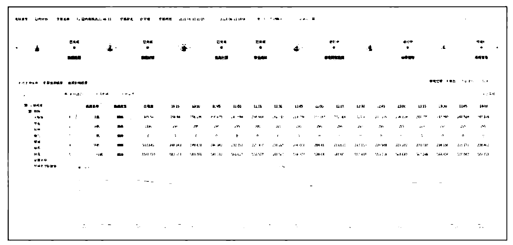
图23-8 日内市场出清操作页面
23.3.1.1 启动环节
日内市场出清启动支持周期滚动、事件触发和人工启动计算等方式。其中，周期滚动一般以15min粒度为周期，也支持用户指定的每天固定时段集启动。
23.3.1.2 数据处理环节
数据处理环节根据日内市场出清的计算范围创建算例，为日内市场出清提供计算场景。场景数据类型主要包括模型数据、方式数据、市场报价（采用日前市场封存报价）、超短期系统负荷预测、超短期母线负荷预测、超短期新能源预测功率、日前机组启停状
态、输变电设备检修、稳定断面限额、日内联络线计划、机组申报固定出力计划、系统备用需求、机组实时运行状态等信息。
23.3.1.3 数据校验环节
数据校验环节同日前市场出清，但校验时段、校验范围和校验规则为日内市场出清配置。
23.3.1.4 优化计算环节
优化计算环节优化目标与约束条件类似日前市场出清，优化出清时以日前机组开停状态为基础，使用 SCUC 技术，每 15min（或用户指定时段集）滚动计算未来 30min 至未来多小时的快速启停机组启停计划和机组出力计划。
23.3.1.5 安全校核环节
安全校核环节同日前市场出清，校核时段范围为日内市场出清案例范围。
23.3.1.6 结果管理环节
结果管理环节在日前市场出清基础上增加日前日内机组开停状态对比分析。
23.3.1.7 市场发布环节
市场发布环节同日前市场出清，日内市场出清结果滚动覆盖案例周期范围内的日前市场出清结果。
23.3.2 核心功能
日内市场出清相关的支撑功能主要包括约束条件管理、数据校验与处理、日内市场出清、结果异常监测、市场出清异常处置、日内市场结果管理等，基本功能同日前市场出清类似，这里重点介绍一下日内市场出清和日内市场结果管理功能，其他内容不再赘述。
23.3.2.1 日内市场出清
1. 优化目标
日内市场出清 SCUC 模型的目标是社会福利最大化，目标函数表示为
$$ \operatorname*{m a x}F=\sum_{d=1}^{D}\sum_{t=1}^{T}[B_{d,t}(P_{d,t})]-\sum_{i=1}^{N}\sum_{t=1}^{T}[C_{i,t}(P_{i,t})+C_{i,t}^{U}] $$
（23-16）
式中：T为系统调度期间的时段数；N表示机组台数；D表示负荷个数； $ P_{i,t} $表示机组i在时段t的出力； $ P_{d,t} $表示市场负荷d在时段t的用电计划； $ C_{i,t}(P_{i,t}) $、 $ C_{i,t}^{U} $分别为机组i在时段t的发电成本和启动成本； $ B_{d,t}(P_{d,t}) $为负荷d在时段t的售电收益。
机组发电成本可表示为
$$ C_{i,t}(P_{i,t})=\sum_{m=1}^{NM}C_{i,m}P_{i,t,m} $$
（23-17）
式中：NM 为机组报价总段数； $ P_{i,t,m} $ 为机组 i 在 t 时刻第 m 个出力区间中的中标电力； $ C_{i,m} $ 为机组申报的第 m 个出力区间对应的能量价格。
$ P_{i,t} $ 可进一步表示为
$$ P_{i,t}=\sum_{m=1}^{NM}P_{i,t,m} $$
（23-18）
负荷侧售电收益可表示为
$$ B_{d,t}(P_{d,t})=\sum_{m=1}^{N D}C_{d,m}P_{d,t,m} $$
（23-19）
式中：ND 为负荷侧报价总段数； $ P_{d,t,m} $ 为负荷 d 在 t 时刻第 m 个出力区间中的中标电力； $ C_{d,m} $ 为负荷 d 申报的第 m 个出力区间对应的购电价格。
$ P_{d,t} $ 可进一步表示为
$$ P_{d,t}=\sum_{m=1}^{N D}P_{d,t,m} $$
(23-20)
国内电力现货市场建设初期，负荷侧一般不参与市场竞价出清，故用户侧售电收益 $ B_{d,t}(P_{d,t}) $为常数，社会福利最大化的优化目标可以转化为购电成本最小，即
$$ \min F=\sum_{i=1}^{N}\sum_{t=1}^{T}[C_{i,t}(P_{i,t})+C_{i,t}^{U}] $$
（23-21）
2. 约束条件
约束条件决定日内市场出清的可行域范围，由于各地区电力现货市场规则不同导致约束条件存在差异，故可对机组约束、系统平衡约束、网络约束进行参数配置和生效设置，具体约束条件参见约束条件管理。日内市场约束条件管理同日前市场功能类似，但生效约束条件独立存储和管理。
3. 模型求解
日内市场出清模型的决策变量为所有机组出力和快速启停机组开停状态，由于可快速启停机组开停状态为0/1变量，且优化目标和约束条件均为线性，故数学模型类型为混合整数线性规划模型，采用分支定界切平面算法进行求解。
4. 节点价格
日内市场出清后，得到各时段系统负荷平衡约束、线路和断面潮流约束的拉格朗日乘子，则节点 k 在时段 t 的节点电价为
$$ L M P_{k,t}=\lambda_{t}-\sum_{l=1}^{L}(\tau_{l,t}^{\mathrm{m a x}}-\tau_{l,t}^{\mathrm{m i n}})G_{l-k}-\sum_{s=1}^{S}(\tau_{s,t}^{\mathrm{m a x}}-\tau_{s,t}^{\mathrm{m i n}})G_{s-k} $$
（23-22）
式中： $ \lambda_{t} $ 为时段 t 系统负荷平衡约束的拉格朗日乘子； $ \tau_{l,t}^{\max} $ 为线路 l 最大正向潮流约束的拉格朗日乘子，当线路潮流越限时，该拉格朗日乘子为网络潮流约束松弛罚因子； $ \tau_{l,t}^{\min} $ 为线路 l 最大反向潮流约束的拉格朗日乘子，当线路潮流越限时，该拉格朗日乘子为网络潮流约束松弛罚因子。
流约束松弛罚因子； $ \tau_{s,t}^{\max} $ 为断面 s 最大正向潮流约束的拉格朗日乘子，当断面潮流越限时，该拉格朗日乘子为网络潮流约束松弛罚因子； $ \tau_{s,t}^{\min} $ 为断面 s 最大反向潮流约束的拉格朗日乘子，当断面潮流越限时，该拉格朗日乘子为网络潮流约束松弛罚因子； $ G_{l-k} $ 为节点 k 对线路 l 的发电机输出功率转移分布因子； $ G_{s-k} $ 为节点 k 对断面 s 的发电机输出功率转移分布因子。
23.3.2.2 日内市场结果管理
日内市场结果管理支持对市场出清相关结果的查询统计，包括机组组合、机组出力、负荷中标量、出清价格、设备重载越限信息等，并能根据实际规则需求进行人工干预。为便于后续日前市场出清算例的反演分析，能够将当前计算场景全流程数据进行封存管理。与日前市场结果管理不同的是，日内机组出力及启停计划、节点电价等市场出清结果根据配置可向外部横纵向系统自动滚动发布。
23.4 实时市场出清
实时市场根据电网当前运行状态、最新系统负荷预测和实时市场报价（可采用日前市场封存报价），在日前与日内滚动机组组合确定的机组开停机组合基础上，采用SCED算法，每15min滚动计算未来15min至2h的机组出力计划及价格等，滚动频率及时间尺度可根据不同地区市场出清计算要求进行灵活设定，机组出力计划送到调度自动化系统进行控制执行。要求每15min至少可完成1次机组出力计划及价格的滚动计算，生成间隔时间为15min或5min的出力计划及价格。
23.4.1 出清流程
实时市场出清的业务流程与日前市场出清类似，主要包括启动、数据处理、数据校验、优化计算、安全校核、市场异常监测结果管理、市场发布等环节，如图23-9所示。相同内容不再赘述，以下重点描述与日前市场出清的不同之处。
23.4.1.1 启动环节
实时市场出清启动支持周期滚动、事件触发和人工启动计算等方式。其中，周期滚动一般以 5min 或 15min 粒度为周期。
23.4.1.2 数据处理环节
数据处理环节根据实时市场出清的计算范围创建算例，为实时市场出清提供计算场景。场景数据类型主要包括模型数据、方式数据、市场报价（采用日前市场封存报价）、超短期系统负荷预测、超短期母线负荷预测、超短期新能源预测功率、日前及日内机组启停状态、输变电设备检修、稳定断面限额、实时联络线计划、系统备用需求、机组实时运行状态等信息。
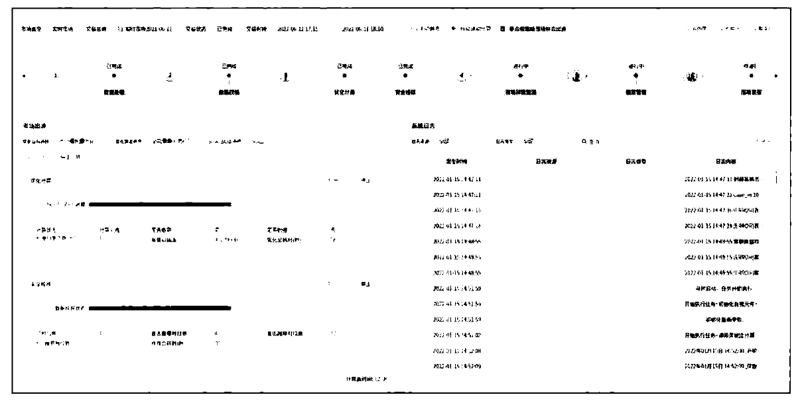
图23-9 实时市场出清操作页面
23.4.1.3 数据校验环节
数据校验环节同日前市场出清，但校验时段、校验范围和校验规则为实时市场出清配置。
23.4.1.4 优化计算环节
优化计算环节优化目标与约束条件类似日前市场出清，优化出清时以日前及日内机组开停状态为基础，使用SCED技术，每5min或15min滚动计算未来15min～2h的机组出力计划及价格等。
23.4.1.5 安全校核环节
安全校核环节同日前市场出清，校核时段范围为实时市场出清案例范围。
23.4.1.6 结果管理环节
结果管理环节在日前市场出清基础上增加日前、日内、实时机组出力及价格对比分析。
23.4.1.7 市场发布环节
市场发布环节同日前市场出清，实时市场出清结果滚动覆盖案例周期范围内的日内市场出清结果。
23.4.2 核心功能
实时市场出清相关的支撑功能主要包括约束条件管理、数据校验与处理、实时市场出
清、结果异常监测、市场出清异常处置、实时市场结果管理等，基本功能同日前市场出清类似，这里重点介绍一下实时市场出清和实时市场结果管理功能，其他内容不再赘述。
23.4.2.1 实时市场出清
实时市场出清 SCED 模型的目标是社会效益最大化，目标函数表示为
$$ \max F=\sum_{d=1}^{D}\sum_{t=1}^{T}B_{d,t}(P_{d,t})-\sum_{i=1}^{N}\sum_{t=1}^{T}C_{i,t}(P_{i,t}) $$
（23-23）
式中：T为系统调度期间的时段数；N表示机组台数；D表示负荷个数； $ P_{i,t} $表示机组i在时段t的出力； $ P_{d,t} $表示市场负荷d在时段t的用电计划； $ C_{i,t}(P_{i,t}) $为机组i在时段t的发电成本； $ B_{d,t}(P_{d,t}) $为负荷d在时段t的售电收益。
机组发电成本可表示为
$$ C_{i,t}(P_{i,t})=\sum_{m=1}^{NM}C_{i,m}P_{i,t,m} $$
(23-24)
式中：NM 为机组报价总段数； $ P_{i,t,m} $ 为机组 i 在 t 时刻第 m 个出力区间中的中标电力； $ C_{i,m} $ 为机组申报的第 m 个出力区间对应的能量价格。
$ P_{i,t} $ 可进一步表示为
$$ P_{i,t}=\sum_{m=1}^{NM}P_{i,t,m} $$
（23-25）
负荷侧售电收益可表示为
$$ B_{d,t}(P_{d,t})=\sum_{m=1}^{N D}C_{d,m}P_{d,t,m} $$
（23-26）
式中：ND 为负荷侧报价总段数； $ P_{d,t,m} $ 为负荷 d 在 t 时刻第 m 个出力区间中的中标电力； $ C_{d,m} $ 为负荷申报的第 m 个出力区间对应的购电价格。
$ P_{d,t} $ 可进一步表示为
$$ \left|P_{d,t}=\sum_{m=1}^{N D}P_{d,t,m}\right| $$
（23-27）
国内电力现货市场建设初期，负荷侧一般不参与市场竞价出清，故用户侧售电收益 $ B_{d,t}(P_{d,t}) $为常数，社会效益最大化的优化目标可以转化为发电成本最小，即
$$ \min F=\sum_{i=1}^{N}\sum_{t=1}^{T}C_{i,t}(P_{i,t}) $$
(23-28)
23.4.2.2 约束条件
约束条件决定实时市场出清的可行域范围，由于各地区电力现货市场规则不同导致约束条件存在差异，故可对机组约束、系统平衡约束、网络约束进行参数配置和生效设置，具体约束条件参见约束条件管理。实时市场约束条件管理同日前市场功能类似，但生效
约束条件独立存储和管理。
23.4.2.3 模型求解
实时市场出清模型的决策变量为机组出力，机组开停机状态均以日前日内出清结果为准固定，因此，决策变量均为连续变量，且优化目标和约束条件均为线性，故数学模型类型为线性规划模型，采用对偶单纯型算法进行求解。
23.4.2.4 节点价格
实时市场出清后，得到各时段系统负荷平衡约束、线路和断面潮流约束的拉格朗日乘子，则节点 k 在时段 t 的节点电价为
$$ L M P_{k,t}=\lambda_{t}-\sum_{l=1}^{L}\left(\tau_{l,t}^{\max}-\tau_{l,t}^{\min}\right)G_{l-k}-\sum_{s=1}^{S}\left(\tau_{s,t}^{\max}-\tau_{s,t}^{\min}\right)G_{s-k} $$
(23-29)
式中： $ \lambda_{t} $ 为时段 t 系统负荷平衡约束的拉格朗日乘子； $ \tau_{l,t}^{\max} $ 为线路 l 最大正向潮流约束的拉格朗日乘子，当线路潮流越限时，该拉格朗日乘子为网络潮流约束松弛罚因子； $ \tau_{l,t}^{\min} $ 为线路 l 最大反向潮流约束的拉格朗日乘子，当线路潮流越限时，该拉格朗日乘子为网络潮流约束松弛罚因子； $ \tau_{s,t}^{\max} $ 为断面 s 最大正向潮流约束的拉格朗日乘子，当断面潮流越限时，该拉格朗日乘子为网络潮流约束松弛罚因子； $ \tau_{s,t}^{\min} $ 为断面 s 最大反向潮流约束的拉格朗日乘子，当断面潮流越限时，该拉格朗日乘子为网络潮流约束松弛罚因子； $ G_{l-k} $ 为节点 k 对线路 l 的发电机输出功率转移分布因子； $ G_{s-k} $ 为节点 k 对断面 s 的发电机输出功率转移分布因子。
23.4.2.5 实时市场结果管理
实时市场结果管理支持对市场出清相关结果的查询统计，包括机组组合、机组出力、负荷中标量、出清价格、设备重载越限信息等，并能根据实际规则需求进行人工干预。为便于后续日前市场出清算例的反演分析，能够将当前计算场景全流程数据进行封存管理。与日前市场结果管理不同的是，实时机组出力及启停计划、节点电价等市场出清结果根据配置可向外部横纵向系统自动滚动发布。
与日内市场出清结果发布环节不同的是，实时市场出清结果发布需要与调度自动化系统形成闭环，即实时市场出清结果需要作为基点计划自动发送 AGC，实现机组发电计划闭环执行。
23.5 实时运行调度
在实时市场出清流程结束后至实时调度执行前，由于电网运行状态可能发生变化，导致实时市场出清结果不满足调度运行要求，根据电网及机组实时运行状态，对实时市场生成的机组出力计划进行快速调整，确保最终发电计划更加符合当前电网实际安全、稳
定运行要求，实时运行调度结果直接送自动发电控制（AGC）进行控制执行。实时运行调度主要包括实时运行信息监视、实时调度及人工操作日志三个功能模块。
23.5.1 实时运行信息监视
实时运行信息监视是对当前电网实时运行状态及实时计划结果进行监视，当存在异常状态或运行风险时，及时通过实时调度功能进行实时计划调整，实时运行监视界面如图23-10所示，监视内容包括：
（1）监视实时计划发用电不平衡量。
（2）监视实时计划爬坡总加、滑坡总加及负荷变化量。
（3）监视断面越限情况，包括断面限额、断面潮流、越限时刻等信息。
（4）监视机组出力、正负备用、重要断面潮流等电网实时运行信息。
（5）监视系统总爬坡滑坡、上下调备用、实际调频容量信息。
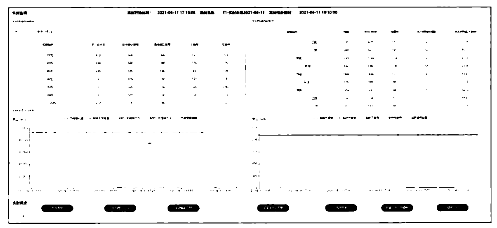
图 23-10 实时运行监视
23.5.2 实时调度
实时调度主要是对不满足电网实时运行要求的各类调度计划结果、市场边界、运行约束条件等进行调整，使调整后的结果更加贴合实际电网运行，调整后的结果通过 AGC 等直接下发执行或者返回给下一轮实时市场出清。实时调度－计划调整如图 23-11 所示，主要功能包括：
（1）根据电网运行情况对10min系统备用调整。
（2）根据电网及机组运行情况对机组固定出力进行调整。
（3）负荷预测偏差量调整，对负荷预测的结果增加一个偏置量，主要解决某些特殊时刻负荷预测偏差问题。
（4）根据机组实际运行能力对机组出力上下限进行调整。
（5）根据电网调频对调频市场需求进行调整。
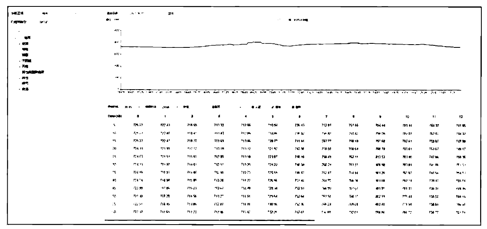
图23-11 实时调度-计划调整
（6）对单台或多台机组出力计划进行调整，根据设定的偏差量按照剩余发电能力比例、市场出清结果比例等原则自动调整机组出力计划。
23.5.3 人工操作日志
人工操作日志对是实时调度中所有人工操作进行详细日志记录，用于事后分析、市场监管及原因追溯。人工操作日志界面如图23-12所示，主要包括：
（1）对所有人工调整操作进行日志记录，日志记录内容应包括操作人、操作时间、操作数前值、操作数后值、操作原因等信息。
（2）对日志信息进行分类检索和统计分析，包括从操作时间、操作人员、操作原因、操作对象等多维度进行分析。
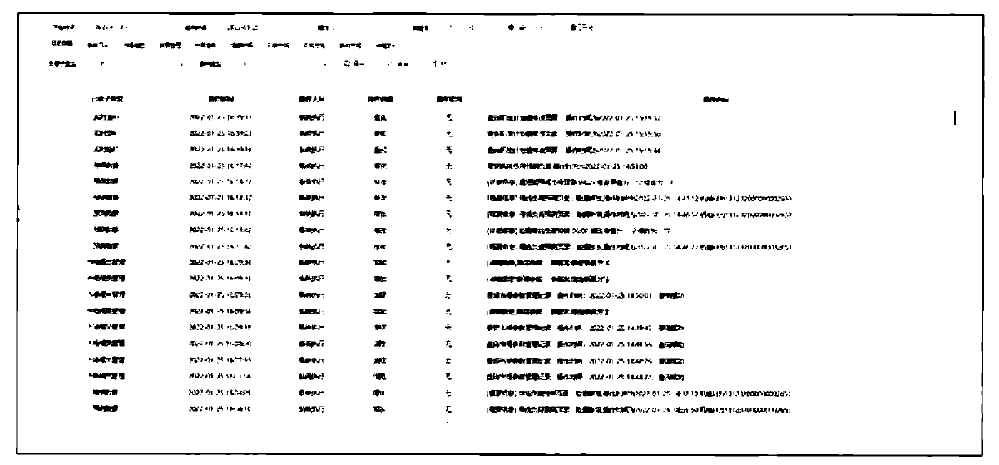
图23-12 人工操作日志
23.6 本章小结
本章根据电能量现货市场出清流程分别介绍日前市场出清、可靠性机组组合、日内市场出清、实时市场出清、实时运行调度等主要功能的出清业务流程。对各环节市场的约束条件管理、数据处理与校验、市场出清、结果监测、市场出清异常处置、市场结果管理等核心功能进行详细阐述。通过上述功能实现日前、日内、实时等不同周期下电能量市场出清，形成机组启动安排、中标电力及价格。当前国内省级电力现货试点一般未采用日内市场，在日内普遍采用可靠性机组组合手段。
辅助服务市场出清
辅助服务市场中无功、黑启动等一般通过签订双边合约方式来约定服务提供方及价格，非市场化竞争模式。本章重点介绍国内目前已经开展的调频、备用辅助服务市场功能，部分地区根据需求开展了调峰服务市场，其本质是通过短时电力调节使发电出力匹配负荷的变化，实现电力电量的平衡，国外电力辅助服务市场中并没有这个品种，一般通过电力现货市场中的实时市场或平衡机制实现，未来，随着我国电力现货市场全面启动，调峰市场也将与电力现货市场进行融合，不再有独立的调峰市场
24.1 调频辅助服务市场
开展调频辅助服务市场化交易，包括调频需求计算、调频市场数据准备、调频市场出清、调频结果查询、调频结果管理等功能。
24.1.1 调频需求计算
基于电网运行情况，按照系统负荷预测比例、新能源及系统负荷预测偏差等多种方式，计算调频辅助服务市场各交易时段的调频容量需求，支持对调频需求进行人工干预调整；按照市场规则向市场成员发布调频需求、系统负荷预测等市场相关信息。调频需求计算界面如图24-1所示。
24.1.2 调频市场数据准备
获取调频市场出清所需的申报类、运行类、调频性能类边界数据，形成调频市场出清计算场景，出清数据准备－报价数据、出清数据准备－性能数据分别如图24-2和图24-3所示，主要数据包括申报类数据、运行类数据、调频性能数据。
（1）申报类数据。调频机组申报的调频容量、调频容量报价、调频里程报价数据。
（2）运行类数据。调频需求、机组组合、机组实时运行状态等边界数据。
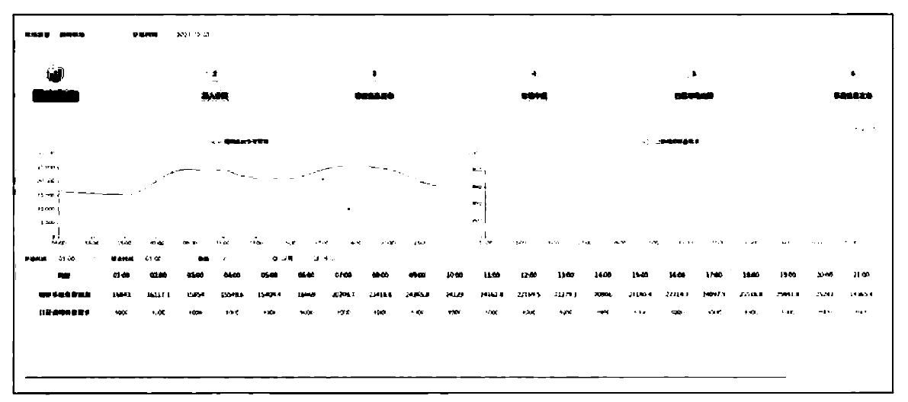
图24-1 调频需求计算
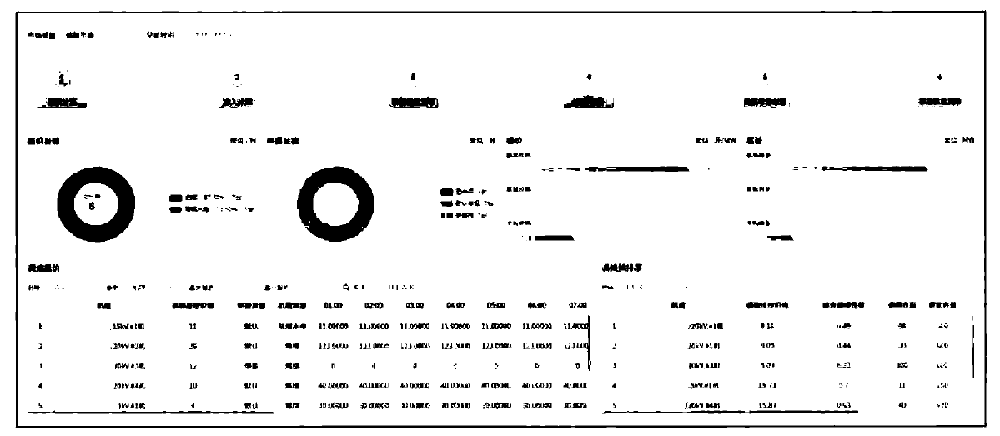
图24-2 出清数据准备-报价数据
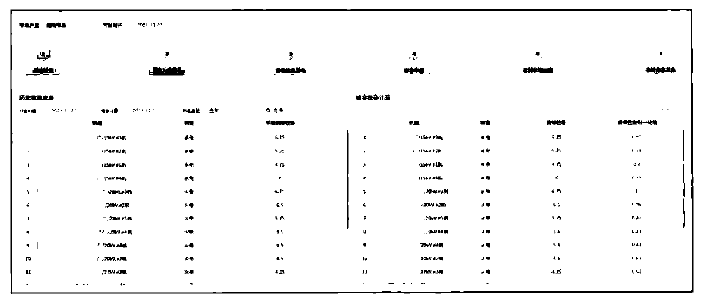
图24-3 出清数据准备-性能数据